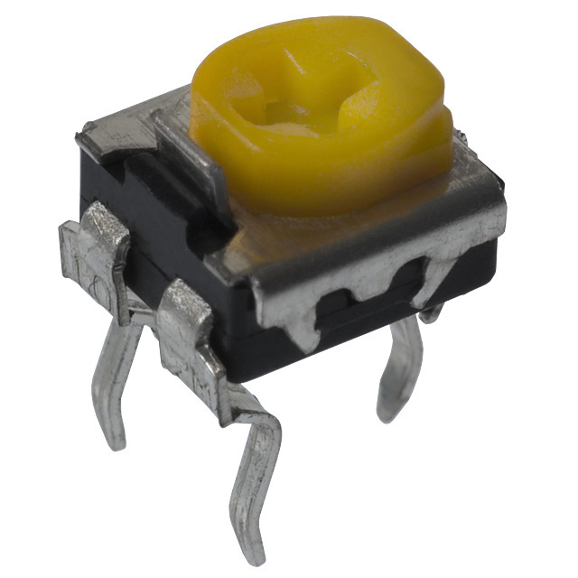
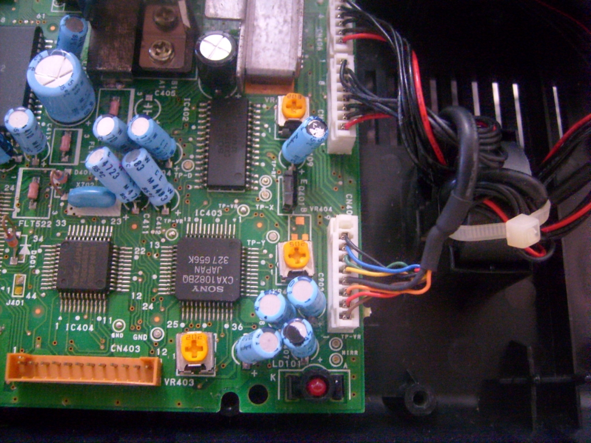
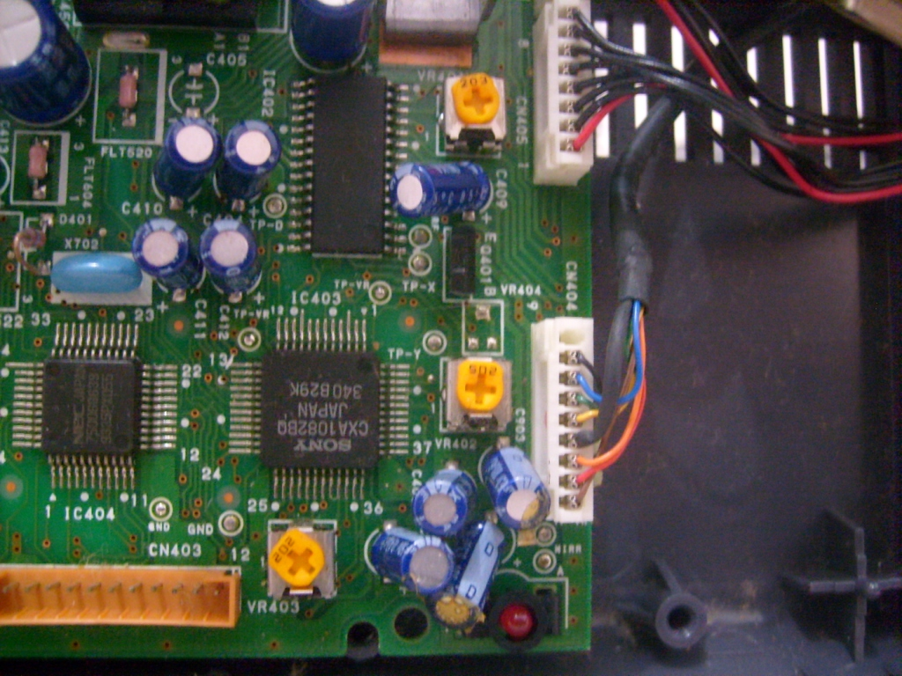

Sega CD - Configurando a unidade ótica
 :::. Por Gigacom - É
normal um colecionador comprar um Sega CD com a unidade ótica
pifada, e antes de decidir trocar o leitor, acaba resolvendo
dá uma mexida nos trimpots na esperança de "realinhar o
canhão". Entre mitos e lendas, explico como isso realmente
funciona, como evitar um desastre e como consertar tudo.
:::. Por Gigacom - É
normal um colecionador comprar um Sega CD com a unidade ótica
pifada, e antes de decidir trocar o leitor, acaba resolvendo
dá uma mexida nos trimpots na esperança de "realinhar o
canhão". Entre mitos e lendas, explico como isso realmente
funciona, como evitar um desastre e como consertar tudo.
Trimpots são uma espécie de potênciometro em miniatura. É pequeno, prático, fácil de soldar, e está presente em vários consoles, principalmente os da Sega. Os trimpots no Sega CD tem por finalidade regular diversas propriedades do leitor ótico e foram perfeitamente configurados logo que saíram da fábrica. Algumas pessoas quando veêm que o leitor do Sega CD já está nas ultimas, ou simplesmente adiquirem um SCD já com o leitor cego, tentam de inicio dá uma mexida nesses trimpots para ver se o canhão alinha novamente.
Bem,
aí tá o mito do desalinhamento do canhão... o
desalinhamento de uma unidade ótica na verdade ocorre quando a
base por onde o leitor desliza sofre alguma alteração em
seu plano, fazendo com que o leitor fique mais baixo ou alto do que
deveria. Para provocar um desalinhamento dessa natureza, é
preciso literalmente entortar a unidade ótica. Mas isso
não acontece do nada, só ocorre se uma mula for lá
e entortar o troço .
Portanto, seu leitor NUNCA, repito, N-U-N-C-A ficará desalinhado
ao menos que você resolva brincar de Super Man ao tentar entortar
aquelas barrinhas de aço ou a base do leitor...
.
Portanto, seu leitor NUNCA, repito, N-U-N-C-A ficará desalinhado
ao menos que você resolva brincar de Super Man ao tentar entortar
aquelas barrinhas de aço ou a base do leitor...
Tambem pode acontecer do leitor perfer o foco. Explicando em miúdos, o leitor é constituido de um emissor laser que passa por uma lente, que faz o foco devido para que haja a perfeita direção de ida e volta do feixe de luz entre o CD e o leitor. Porém, quando o emissor de laser recebe uma carga de energia fora do padrão dele, esse feixe luz pode ser projetado pela lente para um local fora do foco (além ou antes de alcançar o CD), daí ocorre o desajuste do canhão ou leitor ótico.
Agora que você sabe sobre o que ocorre de fato nos mitos do desajuste do canhão e do desalinhamento, voltemos à parte dos trimpots.
No
Sega CD, os trimpots são milimetricamente configurados para que
o leitor opere no foco, potência e ganho devidos. Uma minima
alteração na posição da chave dos trimpots,
e o SCD fica cego ou enxergando demais. O problema ocorre justamente
aqui, quando um novo dono de SCD desajusta os trimpots, troca a unidade
ótica por uma nova, porém continua tendo problema para
fazer um CD rodar, sem que se lembre como era que os trimpots estavam
configurados antes dele mexer. Nesse ponto, devo fazer minha
confissão: já dei a merda de mexer nesses malditos
trimpots, antes e depois de trocar a unidade ótica de um SCD .
Foi um parto para reajustar tudo de novo, justamente por falta de
informação ou de alguem que me ensinasse como arrumar
esse troço. Depois de uns dias tentando e tentando, eis que
enfim descobri como ajustar os trimpots e trazer o SCD de volta a vida.
.
Foi um parto para reajustar tudo de novo, justamente por falta de
informação ou de alguem que me ensinasse como arrumar
esse troço. Depois de uns dias tentando e tentando, eis que
enfim descobri como ajustar os trimpots e trazer o SCD de volta a vida.
Porém, foi curioso quando consegui um outro Sega CD, igual ao antigo que teve a unidade ótica trocada, porém com um dos trimpots em uma posição diferente da do outro. Pesquisando um pouco mais, descobri que um ou outro leitor, pode precisar de ajuste em um desses trimpots, que é justamente o 3º contando de cima para baixo. Bem, para ajudar quem esteja desesperado tentando ajustar esses malditos amarelinhos, segue abaixo duas fotos que mostram como eles devem ficar configurados:

Esta foto é do Sega CD que está com o leitor ótico original. Repare como os trimpots ficam mais ou menos todos configurados para cima.

Essa foto é do Sega CD que teve o leitor ótico trocado. O leitor não é original, afinal, a Sony deixou de fabricar esses leitores ha tempos... daí foi preciso fazer um ajuste no 3º trimpot para que tudo funcionasse.
Há
ainda um outro trimpot no proprio leitor ótico, mas por
padrão, não é possivel alterar esse trimpot pois
ele está fixo, colado no mesmo lugar. Só se o sujeito
realmente forçar a coisa ali para mudar algo, mas aí
corre o risco é de estragar tudo mesmo .
.
Duvidas,
reclamações, sugestões e declarações
de amor... já sabem, só acessar o trombone.
Acesse o Trombone e comente sobre essa matéria!


Aqui, vou apresentar a restauração de um controle de SNES que comprei em péssimo estado numa feirinha da minha cidade, e que agora está lindinho funcionando perfeitamente. Confira as dicas, e faça uma restauração você também